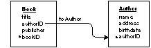

Release 3.3 Copyright ©1995 by NeXT Computer, Inc. All Rights Reserved.
| 6 |
Model Emulation
| The Database Kit modeling objects are created from a class and two protocols: |
| Instances of the DBDatabase class represent database models. | ||
| The DBEntities protocol provides methods that let you examine the entities in a model. | ||
| The DBProperties protocol does the same for the properties (attributes and relationships) in an entity. |
| The modeling objects are created and configured for you by the Database Kit, based on the design of a specific model file--you don't (normally) create instances of these objects yourself. Furthermore, you can't reasonably subclass DBDatabase nor create your own classes that adopt the DBEntities or DBProperties protocol. The story of the modeling objects is, primarily, a description of "hard-wired" Database Kit features. |
| DBDatabase |
| In its role as a modeling object, a DBDatabase provides the primary access to a database model: It reads a specified model file, and stores the entities (as DBEntities objects) that it finds there.
Reading a Model To get a DBDatabase object, you ask the DBDatabase class to return an instance that corresponds to a particular database model. This is done through the findDatabaseNamed:connect: class method: |
| The method's first argument is a string that names the model. The model name is given without a directory path, and without a file extension. | ||
| The second argument is a boolean that determines whether an attempt is made to connect to the adaptor--and so to a database server--upon which the model is based, a subject that's dealt with in a later section. You should note that none of the modeling object manipulations described here require that the DBDatabase be connected to the server. |
| The example below returns the DBDatabase object that corresponds to the "OracleDemo" model (but it doesn't connect to the server): |
 /* Find the DBDatabase object for the model "OracleDemo". */
/* Find the DBDatabase object for the model "OracleDemo". */
 DBDatabase *db = [DBDatabase findDatabaseNamed:"OracleDemo"
DBDatabase *db = [DBDatabase findDatabaseNamed:"OracleDemo"
 connect:NO];
connect:NO];
| The DBDatabase class maintains a table of existing DBDatabase objects so that multiple invocations of findDatabaseNamed:connect: for the same model will return the same object. If you ask for an as-yet-unread model, the class searches for the model in the following directories (in this order): |
| 1. | The path to your application's main bundle. | |
| 2. | ~/Library/Databases | |
| 3. | /LocalLibrary/Databases | |
| 4. | /NextLibrary/Databases |
| DBDatabase objects can only read models that are in archive format, thus the class only looks for model files that have the ".dbmodel" extension.
The directory method returns a string that gives the full pathname of the model that was found (including the model name and file extension). The name method returns the model name only. If the requested model isn't found, the findDatabaseNamed:connect: method returns nil. Note: Throughout the access layer, models are referred to as "databases," as exemplified by the findDatabaseNamed:connect: method. This follows from the use of DBDatabase objects to represent database models.
Finding the Right Model There are two DBDatabase class methods that help you compile a list of candidate model names: |
| databaseNamesForAdaptor: takes, as an argument, the name of an adaptor and returns a NULL-terminated array of model names (strings) that are based upon that adaptor. The strings in the array are suitable for passing as the first argument to findDatabaseNamed:connect:. | ||
| The available adaptor names are returned in an array by the adaptorNames method. |
| The model names are searched for in the directories listed above. Adaptors are searched for in similar places: the main bundle, ~/Library/Adaptors, /LocalLibrary/Adaptors, and /NextLibrary/Adaptors.
Reading a Hidden Model Since the string that you pass to the findDatabaseNamed:connect: isn't a precise filename, you'll find it impossible to get a model that's "hidden" by an identically named model in a preceding directory (preceding in the sense of the directory search). One way to work around this is to use the initFromFile: method. This method takes a full pathname to a model and initializes (and returns) a new DBDatabase object for it. Matter-of-course use of this method is discouraged, however, since it can subvert the normal and natural one-to-one correspondence between DBDatabase objects and database models. |
| DBEntities |
| As it reads its database model, a DBDatabase object fashions a list of objects that represent the entities within the model. You can retrieve this list through the getEntities: method: |
 /* Find the DBDatabase object. */
/* Find the DBDatabase object. */
 DBDatabase *db = [DBDatabase findDatabaseNamed:"OracleDemo"
DBDatabase *db = [DBDatabase findDatabaseNamed:"OracleDemo"
 connect:NO];
connect:NO];
 /* Allocate a List object to retrieve db's entities ... */
/* Allocate a List object to retrieve db's entities ... */
 List *entities = [[List alloc] init];
List *entities = [[List alloc] init];
 /* ... and retrieve them. */
/* ... and retrieve them. */
 [db getEntities:entities];
[db getEntities:entities];
| The elements in the entities List are privately created, read-only objects that conform to the DBEntities protocol. You can't alter entity objects (because the DBEntities protocol doesn't provide any methods to do so), and you never free them yourself.
Each entity object has a string name that's retrieved through the name method. This is the object's "public" name (using the term as it's defined in Chapter 3), not its "internal" name. You can retrieve an entity by name through DBDatabase's entityNamed: method. Given an entity, you can retrieve the DBDatabase that created it by send it a database message. More important than an entity's name or database is its list of properties, as explained in the next section. |
| DBProperties |
| Every entity object contains a list of objects that represent the entity's properties (in Entity-Relationship terms, its attributes and relationships). You retrieve this list through the DBEntities method getProperties:, as shown below: |
 /* Allocate a List object.. */
/* Allocate a List object.. */
 List *propList;
List *propList;
 /* Get the properties from the first in our list of entities. */
/* Get the properties from the first in our list of entities. */
 [[entities objectAt:0] getProperties:propList];
[[entities objectAt:0] getProperties:propList];
| As with the entity objects themselves, these properties are created for you, they're read-only, and you never free them yourself.
The DBProperties protocol, to which the property objects conform, is similar to the DBEntities protocol: It provides a name method that gives the property's public name, and an entity method that returns the property's progenitor. You can find a property by name within a particular entity object by sending a propertyNamed: message to the entity. In this example, the entityNamed: and propertyNamed: methods are nested to retrieve the property object for the Employee.name attribute: |
 /* It's assumed that db was found for a model that contains the
/* It's assumed that db was found for a model that contains the
 requested entity and property. */
requested entity and property. */
 id empName = [[db entityNamed:"Employee"] propertyNamed:"name"];
id empName = [[db entityNamed:"Employee"] propertyNamed:"name"];
| Note well that only those properties that appear directly in an entity (its "natural" properties) can be gotten from the entity--you can't use the propertyNamed: method to traverse a relationship. For example, given the model shown in Figure 73, below, you can ask the Book entity for the properties named title, authorID, publisher, and bookID, but you can't use the "relationship.attribute" format to ask for a property of the related Author entity. Thus, the following message will fail and return nil: |
 /* WARNING: THIS WON'T WORK. */
/* WARNING: THIS WON'T WORK. */
 id wasteOfTime = [[db entityNamed:"Book"]
id wasteOfTime = [[db entityNamed:"Book"]
 propertyNamed:"toAuthor.name"];
propertyNamed:"toAuthor.name"];
|  |
| Figure 73. An Example Model
Primary Keys and Value Mutability The DBProperties protocol supplies boolean methods that further describe a property: |
| isKey tells whether a property is, or is part of, its entity's primary key. Note that the DBEntities protocol doesn't define a method that returns an entity's primary key(s); thus, the only way to get this information is to retrieve the entity's list of property objects and send isKey to each. | ||
| isReadOnly speaks of the mutability of the values that are stored for the property. If this message returns YES when sent to a property object, then the values that are retrieved for the property can't be altered. |
| Property Types
Associated with each property is an object that conforms to the DBTypes protocol; you retrieve this object through the DBProperties method propertyType. A property's DBTypes object establishes the Objective C data type that's used to cast the values for the property. In other words, when data is fetched from the server, all the values in the "column" of data that corresponds to a particular property will be "of the type" denoted by the property's DBTypes object. A property's DBTypes object has one other important role: It's used to determine whether a property is an attribute or a relationship. This is done by sending the isEntity message to the property's DBTypes object. In the following example function, the properties of an entity are sorted into attribute and relationship lists: |
 /* Sort an entity's properties. */
/* Sort an entity's properties. */
 void sortProperties(id entity, List *attrs, List *rels)
void sortProperties(id entity, List *attrs, List *rels)
 {
{
 List *props = [[List alloc] init];
List *props = [[List alloc] init];
 int n;
int n;
 id thisProp;
id thisProp;
 /* Get the entity's properties. */
/* Get the entity's properties. */
 [entity getProperties:props];
[entity getProperties:props];
 /* Sort the properties into the two lists. */
/* Sort the properties into the two lists. */
 for (n = 0; n < [props count]; n++) {
for (n = 0; n < [props count]; n++) {
 thisProp = [props objectAt:n];
thisProp = [props objectAt:n];
 if ([[thisProp propertyType] isEntity]) {
if ([[thisProp propertyType] isEntity]) {
 if (rels)
if (rels)
 [rels addObject:thisProp]; }
[rels addObject:thisProp]; }
 else {
else {
 if (attrs)
if (attrs)
 [attrs addObject:thisProp]; }
[attrs addObject:thisProp]; }
 }
}
 [props free];
[props free];
 }
}
 /* For convenience, we define a couple of macros. */
/* For convenience, we define a couple of macros. */
 #define getAttributes(ent,attrs) sortProperties(ent, attrs, nil)
#define getAttributes(ent,attrs) sortProperties(ent, attrs, nil)
 #define getRelationships(ent,rels) sortProperties(ent, nil, rels)
#define getRelationships(ent,rels) sortProperties(ent, nil, rels)
| Attribute Data Types
Now that the properties are segregated, you can ask each attribute what its Objective C data type is, by sending the objcType message to the property's DBTypes object. The method returns a string that represents the data types according to the following convention: |
| Data type | DBTypes objcType value | |
| object | "@" | |
| string | "*" | |
| integer | "i" | |
| float | "f" | |
| double | "d" |
| In the following example function, a message is printed stating the name and data type of each attribute in a given entity: |
 void printAttributes(id entity)
void printAttributes(id entity)
 {
{
 id thisAttr;
id thisAttr;
 int n;
int n;
 const char *ocType;
const char *ocType;
 List *attrs = [[List alloc] init];
List *attrs = [[List alloc] init];
 /* Call the previously created macro to get the attributes. */
/* Call the previously created macro to get the attributes. */
 getAttributes(entity, attrs);
getAttributes(entity, attrs);
 /* Walk down the attribute list. */
/* Walk down the attribute list. */
 for (n = 0; n < [attrs count]; n++ ) {
for (n = 0; n < [attrs count]; n++ ) {
 thisAttr = [attrs objectAt:n];
thisAttr = [attrs objectAt:n];
 ocType = [[thisAttr propertyType] objcType];
ocType = [[thisAttr propertyType] objcType];
 /* Switch on the ocType value. Since the data type strings are
/* Switch on the ocType value. Since the data type strings are
 all one character long, we can reliably use a simple
all one character long, we can reliably use a simple
 character comparison (rather than strcmp()). */
character comparison (rather than strcmp()). */
 switch (*ocType) {
switch (*ocType) {
 case '@':
case '@':
 printf("%s represents objects.\n", [thisAttr name]);
printf("%s represents objects.\n", [thisAttr name]);
 break;
break;
 case '*':
case '*':
 printf("%s represents strings.\n", [thisAttr name]);
printf("%s represents strings.\n", [thisAttr name]);
 break;
break;
 case 'i':
case 'i':
 printf("%s represents integers.\n", [thisAttr name]);
printf("%s represents integers.\n", [thisAttr name]);
 break;
break;
 case 'f':
case 'f':
 printf("%s represents floats.\n", [thisAttr name]);
printf("%s represents floats.\n", [thisAttr name]);
 break;
break;
 case 'd':
case 'd':
 printf("%s represents doubles.\n", [thisAttr name]);
printf("%s represents doubles.\n", [thisAttr name]);
 break;
break;
 }
}
 }
}
 [attrs free];
[attrs free];
 }
}
| If a property's type is object, you can ask for the name of the object's class by sending the objcClassName message to the property's DBTypes object. Here, the first branch of the example above is modified to print the class name: |
 case '@':
case '@':
 printf("%s represents %s objects.\n", [thisAttr name], [ocType objcClassName]);
printf("%s represents %s objects.\n", [thisAttr name], [ocType objcClassName]);
 break;
break;
| Keep in mind that objcClassName doesn't return the name of the property's class, but of the class that's used to create instances when data is fetched for the property.
Relationship Data Types Since a relationships doesn't "categorize" actual database data (as explained in Chapter 1), the notion of its data type is different from that of an attribute. In short, you never send a objcType or objcClassName message to the DBTypes object of a relationship (sending the latter message actually raises an exception). However, a relationship's DBTypes object does hold important information: The DBTypes object is the relationship's destination entity. The object that's returned when you send a propertyType message to a relationship is a DBEntities-conforming object that can be used like any other entity object. For example, you can ask for its properties, as shown in the following example: |
 /* Given a relationship, create and returns a List of the
/* Given a relationship, create and returns a List of the
 properties that are contained in the relationship's destination
properties that are contained in the relationship's destination
 entity. */
entity. */
 List *getDestinationProperties(id aRelationship)
List *getDestinationProperties(id aRelationship)
 {
{
 id propType = [aRelationship propertyType];
id propType = [aRelationship propertyType];
 List *props;
List *props;
 /* First check to make sure that we have a relationship. */
/* First check to make sure that we have a relationship. */
 if (![propType isEntity])
if (![propType isEntity])
 return nil;
return nil;
 /* Get the properties and return the list. */
/* Get the properties and return the list. */
 props = [[List alloc] init];
props = [[List alloc] init];
 [propType getProperties:props];
[propType getProperties:props];
 return props;
return props;
 }
}
| The notion that a DBTypes object should be an entity may seem curious, but if you consider the nature of a relationship, it makes sense. Just as an attribute categorizes "atomic" data of a certain type, so too does a relationship categorize data. Except that in the case of the relationship, the data values that are being categorized aren't simple atomic types but, rather, they're vectors of data, where the vector is described by the properties in a particular entity (the destination entity). The destination entity, therefore, supplies the data types for the data that's categorized by a relationship. Putting this more simply, the destination entity is the data type of a relationship.
To make this work in the Database Kit, entity objects must conform to the DBTypes protocol. And, indeed, the entity objects that you retrieve from a database model are instances of a (private) class that adopts this protocol.
Relationship Degree The DBProperties protocol provides a boolean method, isSingular, that you can use to determine a relationship's degree: When sent the isSingular message, to-one relationships The following example defines a function that returns a constant which identifies the argument property as an attribute, a to-one relationship, or a to-many relationship: |
 typedef enum _propDegree {
typedef enum _propDegree {
 attribute,
attribute,
 toOneRelationship,
toOneRelationship,
 toManyRelationship
toManyRelationship
 } propDegree;
} propDegree;
 propDegree whatIsProperty(id aProp)
propDegree whatIsProperty(id aProp)
 {
{
 if ([[aProp propertyType] isEntity])
if ([[aProp propertyType] isEntity])
 if ([aProp isSingular])
if ([aProp isSingular])
 return toOneRelationship;
return toOneRelationship;
 else
else
 return toManyRelationship;
return toManyRelationship;
 else
else
 return attribute;
return attribute;
 }
}
| The following truth table can be deduced from the example: |
| type | singular | entity | |
| attribute | YES | ||
| to-one relationship | YES | ||
| to-many relationship | NO |
| Modeling Object Tips |
| There are a few things that you shouldn't--or simply can't--do with the modeling objects.
Setting a Property's Name It was stated above that properties are read-only objects; this isn't strictly true. There's one aspect of a property object that you can--but probably shouldn't--set: its name. The DBProperties protocol defines a setName: method that does what it says; the property objects that the Database Kit creates when it reads a model don't disallow invocations of this method. However, the setName: method is provided, principally, to help you define instances of the DBExpression class, which also conforms to the DBProperties protocol (as explained later in this chapter). It's strongly recommended that you never send setName: to a property object that's gotten from an entity.
Hidden Entities and Properties The DBModeler application and ASCII model file format let you declare an entity or property as "hidden." This state is used, as shown in Chapter 4, to determine whether a model element should be displayed in the Interface Builder model browser. The access layer objects that represent entities and properties don't discriminate between hidden and unhidden objects. When you ask a DBDatabase to return its list of entities, for example, you get all the entities that are declared in the associated model, hidden or not. Furthermore, the entity and property objects don't publicly carry their hidden state--you can't ask these objects if the model declares them as hidden.
Relationship Attributes Recall from Chapter 1, that a relationship is defined not only by its destination entity, but also by the equivalence between a source attribute and a destination attribute. A property object that represents a relationship hides the identities of its equivalent attributes--there are no methods for retrieving this information. In general, you shouldn't need to know the identities of a relationship's source and destination attributes. When these objects are needed--specifically, when you traverse a relationship, as described in Chapter 9--they're applied automatically. |